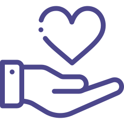

Pedir ajuda também é um passo
Conheça caminhos para encontrar apoio profissional e uma rede de acolhimento.
Eu sou Vitor Arevalo e criei o Slowi para falar de saúde mental com calma, sem julgamento e sem pressa. Aqui você escreve o que sente, olha para os seus dias e lembra que pedir ajuda também faz parte.
♡ Sem pressa. Sem julgamentos. Com você.
O Slowi começou como um projeto da faculdade, mas virou um espaço que eu quis fazer com cuidado: um diário emocional, um histórico para relembrar e gráficos para enxergar os meus dias com mais clareza.
Eu escolhi o tema de saúde mental por sentir que esse tema faz parte da minha vida e por sentir que ele é um tema que precisa ser mais divulgado.
Cada pessoa tem o seu próprio ritmo, e conhecer a si mesmo também é uma forma de cuidado. Aqui, você pode ir com calma, no seu tempo.
O que eu quis que o Slowi fizesse por você:
o que passou pela sua cabeça
como foram os seus dias
padrões nos seus registros
quando fizer sentido para você
É o que eu consegui construir até agora, e sigo aprendendo. Escolha o que faz sentido e deixe o resto para outro dia.
Diário emocional • Leva poucos minutos
Registre a emoção, a intensidade e, se quiser, o que passou pela sua cabeça. Dá para marcar etiquetas como estudo, sono ou família, e só você vê o que escreve.
Histórico • Seus registros em um só lugar
Releia o que você escreveu, corrija um registro quando quiser mudar algo e apague o que não quer mais guardar.
Gráficos • Os últimos 14 dias
Veja quantas vezes você escreveu, quais emoções mais apareceram e a intensidade média dos últimos 14 dias, sem metas e sem cobrança.

Conheça caminhos para encontrar apoio profissional e uma rede de acolhimento.
Nosso bicho-preguiça é um lembrete carinhoso: a vida não precisa ser uma corrida. Ele acompanha os seus registros, os dias mais leves e os mais pesados.
O Slowi não tem todas as respostas. Mas está aqui para lembrar que você pode se escutar com gentileza, e pedir apoio quando precisar.
Você merece acolhimento e o apoio adequado para o que está vivendo
Os textos e recursos daqui são informativos e de auxílio. Não oferecemos diagnóstico ou tratamento. Para cuidar da sua saúde mental, procure um profissional ou uma unidade de saúde próxima.